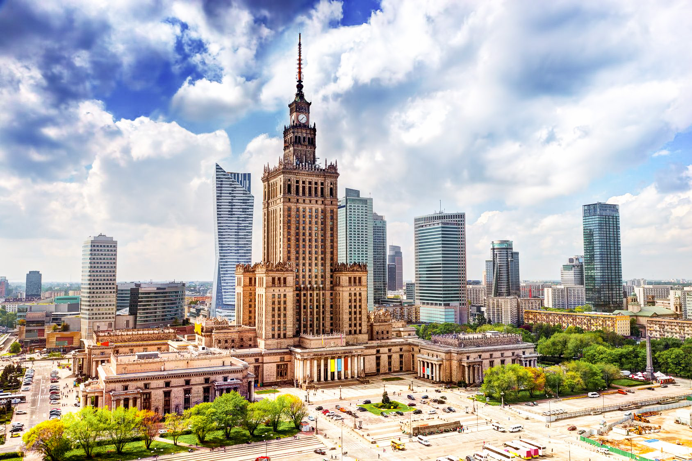

Дата народження: 28.02.2007, Київ
Освіта: Ліцей №142, м.Київ;
НТУУ "КПІ", м. Київ
Хоббі:
Улюблені фільми:
Опис улюбленого міста:
Варша́ва (пол. Warszawa), офіційно столичне місто Варшава (пол. miasto stołeczne Warszawa) — столиця Польщі з 1596, порт на річці Вісла, адміністративний центр Мазовецького воєводства. Місто є місцем розташування центральних органів влади Республіки Польща, іноземних місій, штаб-квартир значної кількості підприємств та громадських об'єднань, що працюють в Польщі.
